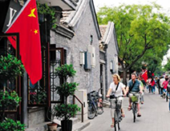

<!DOCTYPE html>
<html>
	<head>
		<meta charset="UTF-8">
		<title>沁心假日</title>
		<meta content="yes" name="apple-touch-fullscreen" />
		<meta content="yes" name="apple-mobile-web-app-capable" />
		<meta content="black" name="apple-mobile-web-app-status-bar-style" />
		<meta name="viewport" content="width=device-width,initial-scale=1,minimum-scale=1,maximum-scale=1,user-scalable=no" />
		<meta name="format-detection" content="telephone=no">
		<link rel="shortcut icon" type="image/x-icon" href="../img/log01.jpg" media="screen" />
		<link rel="stylesheet" href="../css/reset01.css" />
		<link rel="stylesheet" type="text/css" href="../css/holiday.css"/>
	</head>
	<body>
		<header>
			<h1></h1>
		</header>
		<div class="holiday-box">
			 <!--
			 <div class="holiday-page">
			 	<p>南锣鼓巷坐落在北京鼓楼与地安门之间，至今已有740多年的历史。绝无仅有的北京胡同原貌，趣味盎然的各色时尚小店，构成了南锣鼓巷独特的魅力与风情。近几年，这里已经逐渐取代三里屯和后海，成为北京新的时尚地标。南锣鼓巷怀念老北京的人喜欢这里，因为这里有最地道的北京味儿，从明朝将军到满清末代皇后、从文学大师到画坛巨匠，这里的每一个宅院都有数不尽的人物风流;蓝眼睛白皮肤的老外喜欢这里，因为这里有他们一贯的雅致情调和浪漫情怀，“在别处”、“转角遇到爱”、“心是孤独的猎手”、“鬼味”，光听店名就让人无限神往。</p>
			 	<span class='topLeft'></span>
			 	<span class='topRight'></span>
			 	<span class='botLeft'></span>
			 	<span class='botRight'></span>
			 </div>
			 
			 <div class="holiday-page">
			 	<p>门外是古老中国胡同的往日尘烟，门里是熟悉的蓝山咖啡和杜松子酒。似有似无间，你仿佛在古今交错的时间里徜徉，在中西合壁的空间里感受传统与时尚的激情碰撞。就是这般矛盾，却又难以置信地和谐。让人不禁感叹，原来北京可以如此悠然。位于北京市中心的南锣鼓巷，为传统四合院夹道小巷，酒吧、咖啡馆、餐厅、旅店林立，商场出售着以北京为主题的T恤衫和剪纸等手工艺品。如今的南锣鼓巷，商业兴盛，市场繁荣，商场每周都会定期开放。在南边入口处，为了便于修建地铁站，一些古老的四合院也将被拆除，这似乎吸引了更多的人到此游览，同时也推进着南锣鼓巷永不停息、沧海桑田般的时代变迁!</p>
			 	<span class='topLeft'></span>
			 	<span class='topRight'></span>
			 	<span class='botLeft'></span>
			 	<span class='botRight'></span>
			 </div>-->
		</div>
		<script src="../script/jquery-2.1.4.min.js"></script>
		<script src="../js/rem.js"></script>
		<script src='../script/holid.js'></script>
	</body>
</html>
